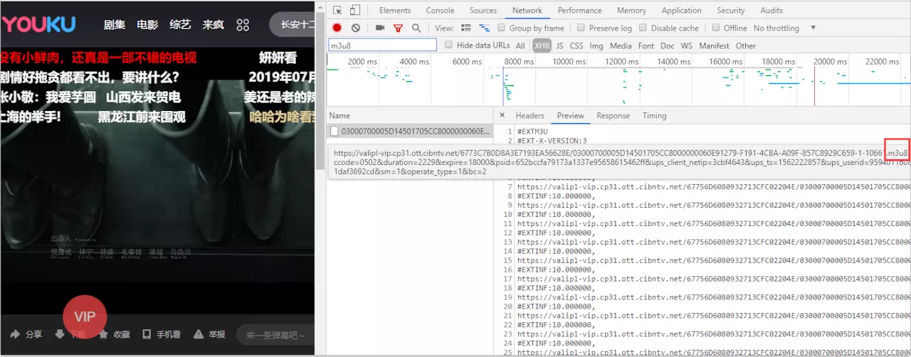
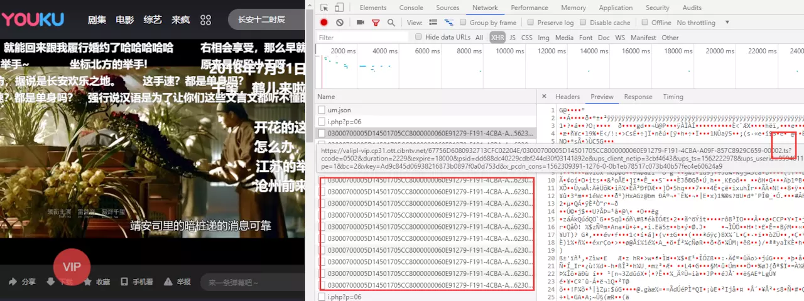
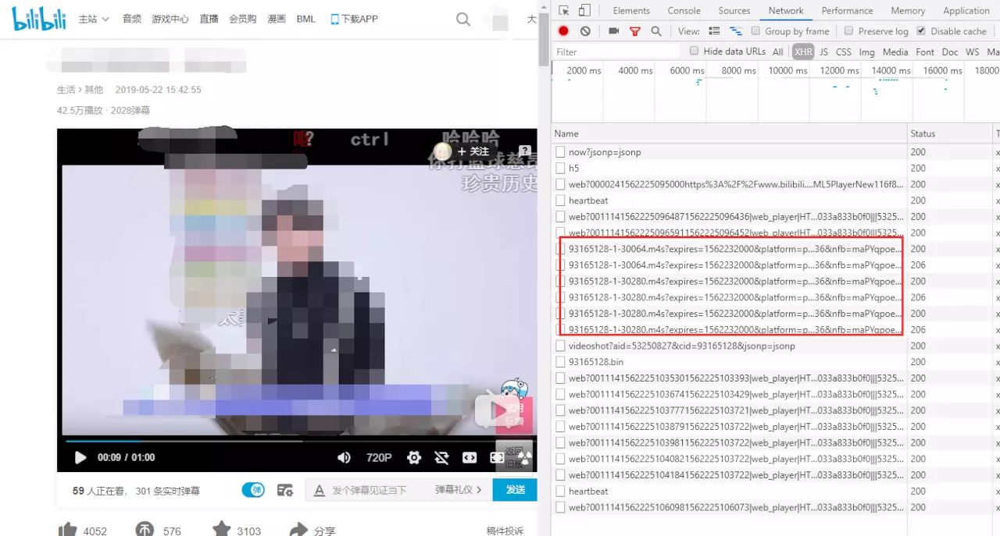

简介
自从HTML5提供了video标签，在网页中播放视频已经变成一个非常简单的事，只要一个video标签src属性设置为视频的地址就完事了。由于src指向真实的视频网络地址，在早期一般网站资源文件不怎么通过referer设置防盗链，所以可以随意的下载视频，也就有了后来通过blob加密视频文件。
目前的云存储服务商大部分都支持referer防盗链。其原理就是在访问资源时，请求头会带上发起请求的页面地址，判断其不存在（表示直接访问图片地址）或不在白名单内，即为盗链。
现在许多视频在线观看网站，你如果打开chrome查看其video标签，会发现它的src是一个以blob:开头的地址。
Blob和ArrayBuffer
Blob是二进制原始数据但是类似文件的对象，ArrayBuffer对象用来表示通用的、固定长度的原始二进制数据缓冲区。
同时他们是可以互相转换的Blob和ArrayBuffer。
Blob
Blob对象表示一个不可变、原始数据的类文件对象。Blob 表示的不一定是JavaScript原生格式的数据。File 接口基于Blob，继承了 blob 的功能并将其扩展使其支持用户系统上的文件。
使用 Blob() 构造函穿新创建的 Blob 对象。常用的方法和属性如下：
slice()方法： 创建包含另一个blob数据的子集blobBlob.size属性（只读）： Blob 对象中所包含数据的大小（字节）。Blob.type属性（只读）： 一个字符串，表明该Blob对象所包含数据的MIME类型。如果类型未知，则该值为空字符串。
- 注意：slice()方法原本接受length作为第二个参数，以表示复制到新Blob 对象的字节数。如果设置的参数使start + length超出了源Blob对象的大小，那返回的则是从start到结尾的数据。
- File对象其实继承自Blob对象，并提供了提供了name ， lastModifiedDate， size ，type 等基础元数据。
ArrayBuffer
ArrayBuffer(length)来获得一片连续的内存空间，它不能直接读写，但可根据需要将其传递到TypedArray视图或 DataView 对象来解释原始缓冲区。实际上视图只是给你提供了一个某种类型的读写接口，让你可以操作ArrayBuffer里的数据。TypedArray需指定一个数组类型来保证数组成员都是同一个数据类型，而DataView数组成员可以是不同的数据类型。
TypedArray 对象描述一个底层的二进制数据缓存区的一个类似数组(array-like)视图，TypedArray对象如下几种：
| 类型 | 大小（字节单位） | 描述 | Web IDL type | C语言中的等效类型 |
|---|---|---|---|---|
| Int8Array | 1 | 8位二进制带符号整数 -2^7~(2^7) - 1 | byte | int8_t |
| Uint8Array | 1 | 8位无符号整数 0~(2^8) - 1 | octet | uint8_t |
| Int16Array | 2 | 16位二进制带符号整数 -2^15~(2^15)-1 | short | int16_t |
| Uint16Array | 2 | 16位无符号整数 0~(2^16) - 1 | unsigned short | uint16_t |
| Int32Array | 4 | 32位二进制带符号整数 -2^31~(2^31)-1 | long | int32_t |
| Uint32Array | 4 | 32位无符号整数 0~(2^32) - 1 | unsigned int | uint32_t |
| Float32Array | 4 | 32位IEEE浮点数 | unrestricted float | float |
| Float64Array | 8 | 64位IEEE浮点数 | unrestricted double | double |
URL.createObjectURL
URL.createObjectURL() 静态方法会创建一个 DOMString，其中包含一个表示参数中给出的对象的URL。这个 URL 的生命周期和创建它的窗口中的 document 绑定。这个新的URL 对象表示指定的 File 对象或 Blob 对象。
DOMString可以说是会话(session)级的，所以你在新的tab打开也就无效了
video标签的src属性，不管是相对路径，绝对路径，或者一个网络地址，归根结底都是指向一个文件资源的地址。上面的Blob其实是一个可以当作文件用的二进制数据，那么只要我们可以生成一个指向Blob的地址，再通过URL.createObjectURL生成一个临时地址，赋值给你video标签的src属性。1
const videoURL = URL.createObjectURL(video); // blob:https://www.aaa.com/12212aa1s1
通过URL.revokeObjectURL(objectURL) 释放一个之前已经存在的、通过调用 URL.createObjectURL() 创建的 URL 对象。
如果是以文件协议打开的html文件（即url为file://开头），则地址中http://localhost:1234会变成null，而且此时这个Blob URL是无法直接访问的。
HLS和MPEG DASH
HLS （HTTP Live Streaming）, 是由 Apple 公司实现的基于 HTTP 的媒体流传输协议。HLS以ts为传输格式，m3u8为索引文件（文件中包含了所要用到的ts文件名称，时长等信息，可以用播放器播放，也可以用vscode之类的编辑器打开查看），在移动端大部分浏览器都支持，也就是说你可以用video标签直接加载一个m3u8文件播放视频或者直播，但是在pc端，除了苹果的Safari，需要引入库来支持。
用到此方案的视频网站比如优酷，可以在视频播放时通过调试查看Network里的xhr请求，会发现一个m3u8文件，和每隔一段时间请求几个ts文件。


但是除了HLS，还有Adobe的HDS，微软的MSS，方案一多就要有个标准点的东西，于是就有了MPEG DASH。
DASH（Dynamic Adaptive Streaming over HTTP） ，是一种在互联网上传送动态码率的Video Streaming技术，类似于苹果的HLS，DASH会通过media presentation description (MPD)将视频内容切片成一个很短的文件片段，每个切片都有多个不同的码率，DASH Client可以根据网络的情况选择一个码率进行播放，支持在不同码率之间无缝切换。
Youtube，B站都是用的这个方案。这个方案索引文件通常是mpd文件（类似HLS的m3u8文件功能），传输格式推荐的是fmp4（Fragmented MP4）,文件扩展名通常为.m4s或直接用.mp4。所以用调试查看b站视频播放时的网络请求，会发现每隔一段时间有几个m4s文件请求。

不管是HLS还是DASH们，都有对应的库甚至是高级的播放器方便我们使用，但我们其实是想要学习一点实现。其实抛开掉索引文件的解析拿到实际媒体文件的传输地址，摆在我们面前的只有一个如何将多个视频数据合并让video标签可以无缝播放。
与之相关的一篇B站文章推荐给感兴趣的朋友：我们为什么使用DASH
MediaSource
video标签src指向一个视频地址，视频播完了再将src修改为下一段的视频地址然后播放，这显然不符合我们无缝播放的要求。其实有了我们前面Blob URL的学习，我们可能就会想到一个思路，用Blob URL指向一个视频二进制数据，然后不断将下一段视频的二进制数据添加拼接进去。这样就可以在不影响播放的情况下，不断的更新视频内容并播放下去，想想是不是有点流的意思出来了。
要实现这个功能我们要通过MediaSource来实现，MediaSource接口功能也很纯粹，作为一个媒体数据容器可以和HTMLMediaElement进行绑定。基本流程就是通过URL.createObjectURL创建容器的BLob URL，设置到video标签的src上，在播放过程中，我们仍然可以通过MediaSource.appendBuffer方法往容器里添加数据，达到更新视频内容的目的。1
2
3
4
5
6
7
8
9
10
11
12
13
14
15
16
17
18
19
20
21
22
23
24
25
26
27
28
29
30
31
32
33
34
35
36
37
38
39
40
41
42
43
44
45const video = document.querySelector('video');
//视频资源存放路径，假设下面有5个分段视频 video1.mp4 ~ video5.mp4，第一个段为初始化视频init.mp4
const assetURL = "http://www.demo.com";
//视频格式和编码信息，主要为判断浏览器是否支持视频格式，但如果信息和视频不符可能会报错
const mimeCodec = 'video/mp4; codecs="avc1.42E01E, mp4a.40.2"';
if ('MediaSource' in window && MediaSource.isTypeSupported(mimeCodec)) {
const mediaSource = new MediaSource();
video.src = URL.createObjectURL(mediaSource); //将video与MediaSource绑定，此处生成一个Blob URL
mediaSource.addEventListener('sourceopen', sourceOpen); //可以理解为容器打开
} else {
//浏览器不支持该视频格式
console.error('Unsupported MIME type or codec: ', mimeCodec);
}
function sourceOpen () {
const mediaSource = this;
const sourceBuffer = mediaSource.addSourceBuffer(mimeCodec);
let i = 1;
function getNextVideo(url) {
//ajax代码实现翻看上文，数据请求类型为arraybuffer
ajax(url, function(buf) {
//往容器中添加请求到的数据，不会影响当下的视频播放。
sourceBuffer.appendBuffer(buf);
});
}
//每次appendBuffer数据更新完之后就会触发
sourceBuffer.addEventListener("updateend", function() {
if (i === 1) {
//第一个初始化视频加载完就开始播放
video.play();
}
if (i < 6) {
//一段视频加载完成后，请求下一段视频
getNextVideo(`${assetURL}/video${i}.mp4`);
}
if (i === 6) {
//全部视频片段加载完关闭容器
mediaSource.endOfStream();
URL.revokeObjectURL(video.src); //Blob URL已经使用并加载，不需要再次使用的话可以释放掉。
}
i++;
});
//加载初始视频
getNextVideo(`${assetURL}/init.mp4`);
};
这段代码修改自MDN的MediaSource词条中的示例代码，原例子中只有加载一段视频，我修改为了多段视频，代码里面很多地方还可以优化精简，这里没做就当是为了方便我们看逻辑。
此时我们已经基本实现了一个简易的流媒体播放功能，如果愿意可以再加入m3u8或mpd文件的解析，设计一下UI界面，就可以实现一个流媒体播放器了。
最后提一下一个坑，很多人跑了MDN的MediaSource示例代码，可能会发现使用官方提供的视频是没问题的，但是用了自己的mp4视频就会报错，这是因为fmp4文件扩展名通常为.m4s或直接用.mp4，但却是特殊的mp4文件。
Fragmented MP4
通常我们使用的mp4文件是嵌套结构的，客户端必须要从头加载一个 MP4 文件，才能够完整播放，不能从中间一段开始播放。而Fragmented MP4（简称fmp4），就如它的名字碎片mp4，是由一系列的片段组成，如果服务器支持 byte-range 请求，那么，这些片段可以独立的进行请求到客户端进行播放，而不需要加载整个文件。
我们可以通过这个网站判断一个mp4文件是否为Fragmented MP4网站地址。
我们通过FFmpeg或Bento4的mp4fragment来将普通mp4转换为Fragmented MP4，两个工具都是命令行工具，按照各自系统下载下来对应的压缩包，解压后设置环境变量指向文件夹中的bin目录，就可以使用相关命令了。
Bento4的mp4fragment，没有太多参数，命令如下:1
mp4fragment video.mp4 video-fragmented.mp4
FFmpeg会需要设置一些参数，命令如下：1
ffmpeg -i video.mp4 -movflags empty_moov+default_base_moof+frag_keyframe video-fragmented.mp4
Tips：网上大部分的资料中转换时是不带default_base_moof这个参数的，虽然可以转换成功，但是经测试如果不添加此参数网页中MediaSource处理视频时会报错。
视频的切割分段可以使用Bento4的mp4slipt，命令如下：
来个实例
服务端使用的nodejs，koa框架，这里的操作很简单，就是用fs.readFileSync直接打开视频文件，得到的data结果是二进制的数据，直接作为结果返回。1
2
3
4
5
6
7
8
9
10
11
12
13
14
15
16
17
18
19
20
21const Koa = require('koa');
const Router = require('koa-router');
const buffer = require('buffer');
const app = new Koa();
const router = new Router();
const video = async (ctx, next) => {
try {
// open 一个放在服务器的视频
let data = fs.readFileSync('XXX.XXX.XXX/simple.mp4');
ctx.response.body = data;
} catch (e) {
return Promise.reject({
status: 500,
message: '视频传输错误'
})
}
next();
}
router.get('/video', video);
app.use(router.routes()).use(router.allowedMethods());
app.liseten(3002);
前端代码，这里使用的最原生的XMLHttpRequest对象语法，这里最重要的一点是要设置responseType为blob，这样接收到response直接就是一个blob对象供我们使用。这个responseType属性不属于http头部信息，而是ajax请求中XHR对象的属性(默认为””也就是text类型，而在一些封装XHR的框架中，一般把默认值设为json)。1
2
3
4
5
6
7
8
9
10
11
12
13let xhr = new XMLHttpRequest();
xhr.open('GET', 'http://localhost:3001/video', true);
xhr.responseType = 'blob';
xhr.onload = function (e) {
if (e.status === 200) {
// 获取blob对象
let blob = this.response
console.log(blob)
// 获取blob对象地址，并把值赋给容器
$("#sound").attr("src", URL.createObjectURL(blob));
}
}
xhr.send()
这样就可以得到以blob:开头的临时url地址，而且在向服务端请求时页隐藏了真实的视频地址.